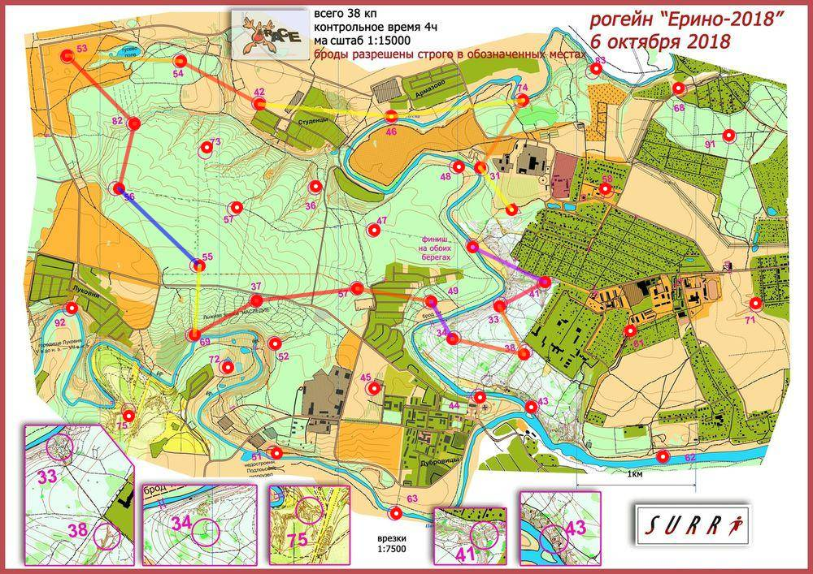

| Участники | Дроздова Елена Козин Максим |
| Группа | МЖ4Б |
| Место | 7 |
| Очки | 77 |
| Штраф | 0 |
| Время | 03:54:20 |
| Результат | 77 |
| КП | Время | Сплит | Расстояние, км | Темп, мин/км |
|---|---|---|---|---|
| С | 12:00:00 | |||
| 31 | 12:03:13 | 00:03:13 | 0.437 | 7.4 |
| 74 | 12:13:24 | 00:10:11 | 0.67 | 15.2 |
| 46 | 12:25:12 | 00:11:48 | 1.111 | 10.6 |
| 42 | 12:36:17 | 00:11:05 | 1.115 | 9.9 |
| 54 | 12:49:53 | 00:13:36 | 0.753 | 18.1 |
| 53 | 13:02:12 | 00:12:19 | 0.955 | 12.9 |
| 82 | 13:17:54 | 00:15:42 | 0.805 | 19.5 |
| 56 | 13:29:31 | 00:11:37 | 0.558 | 20.8 |
| 55 | E | E | 0.934 | >999 |
| 69 | 14:11:48 | E | 0.579 | <1 |
| 37 | 14:23:48 | 00:12:00 | 0.599 | 20.0 |
| 59 | 14:41:54 | 00:18:06 | 0.855 | 21.2 |
| 49 | 14:52:21 | 00:10:27 | 0.626 | 16.7 |
| 34 | 15:05:06 | 00:12:45 | 0.36 | 35.4 |
| 38 | 15:15:51 | 00:10:45 | 0.615 | 17.5 |
| 33 | 15:22:45 | 00:06:54 | 0.443 | 15.6 |
| 41 | 15:34:24 | 00:11:39 | 0.432 | 27.0 |
| Ф | 15:54:20 | 00:19:56 | 0.673 | 29.6 |
| 03:54:20 | 11.942 км | 19.6 мин/км |
